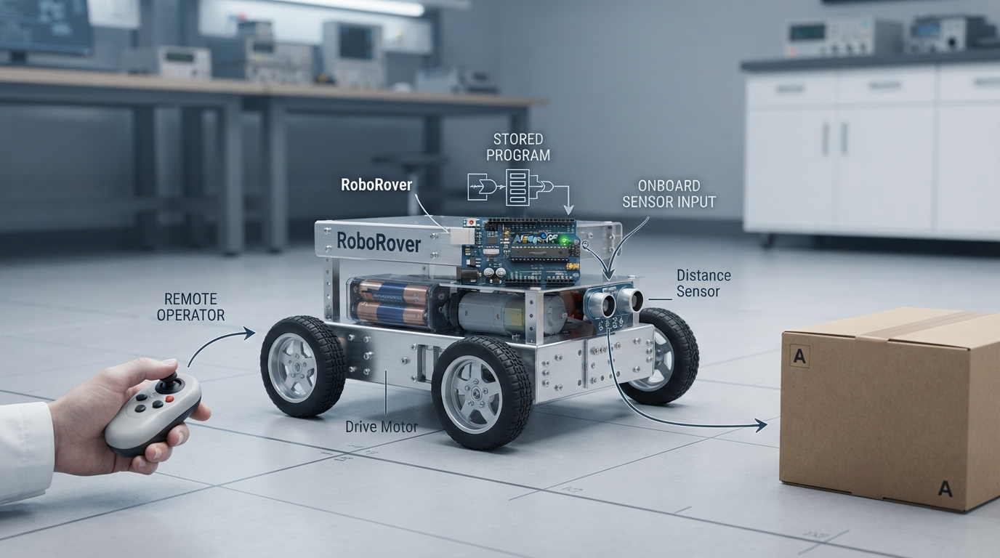

A strong robotics foundation begins by separating questions that are often collapsed into one:
Is this physical system commonly called a robot?
Who or what selects its immediate actions?
Does measured state influence a control action?
In this Professor OS lesson, students use the same RoboRover hardware to compare human-directed, preprogrammed, and software-selected behavior. They also:
• distinguish a robot from its environment;
• see why teleoperation does not remove robot identity;
• understand that preprogrammed behavior can coexist with feedback;
• model ideal distance with d = vt;
• run a Python simulation and inspect its limitations.
The lesson deliberately treats autonomy and feedback as separate ideas rather than as a single ladder of “robot intelligence.” That gives beginners a more reliable vocabulary for later work with sensing, control, and navigation.
Try the lab with three command sources, then modify the model to introduce sensor error or unequal wheel motion. What changes: the hardware model, the decision authority, or both?
#RoboticsEducation #Robotics #Python #Engineering
Is this physical system commonly called a robot?
Who or what selects its immediate actions?
Does measured state influence a control action?
In this Professor OS lesson, students use the same RoboRover hardware to compare human-directed, preprogrammed, and software-selected behavior. They also:
• distinguish a robot from its environment;
• see why teleoperation does not remove robot identity;
• understand that preprogrammed behavior can coexist with feedback;
• model ideal distance with d = vt;
• run a Python simulation and inspect its limitations.
The lesson deliberately treats autonomy and feedback as separate ideas rather than as a single ladder of “robot intelligence.” That gives beginners a more reliable vocabulary for later work with sensing, control, and navigation.
Try the lab with three command sources, then modify the model to introduce sensor error or unequal wheel motion. What changes: the hardware model, the decision authority, or both?
#RoboticsEducation #Robotics #Python #Engineering

What Makes a Robot? A Precise First Lesson in Identity, Autonomy, and Feedback
Professor OS Class 1 helps beginners separate robot identity from decision authority, understand machine boundaries, preview feedback, and test the ideas in Python.